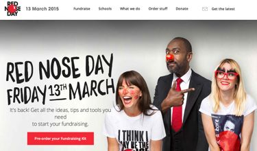
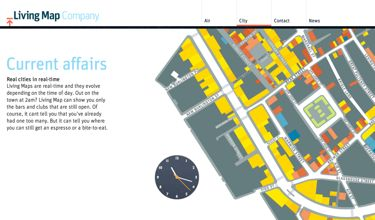
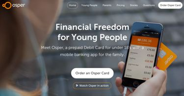
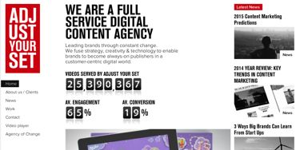
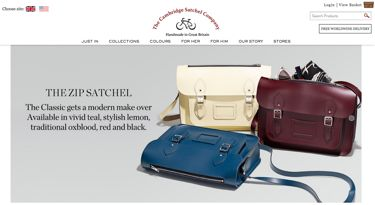
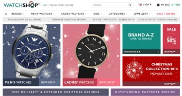
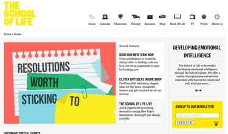
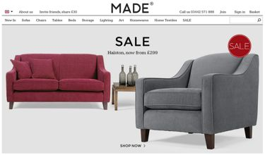

Andy is an experienced Chief Technology Officer, who has worked with a number of high growth startups since 2006, building and managing several successful agile teams of engineers, product managers, user experience professionals and testers, including internationally distributed teams. A certified Scrum Product Owner, he specialises in implementing agile practices which provide means of constant improvement within the development and operations teams, and a culture of improved transparency with the rest of the business.
What can Saccade do for your business?
Saccade's consultants specialise in project turnaround, process improvement and optimisation, interim management, resource planning and team building, culture and employee engagement, vendor selection and management and product management and roadmapping.
We can provide knowledge across Agile and Lean implementation and improvement, eCommerce, ERP and operations, UX and information architecture, DevOps, virtualisation, cloud-based infrastructures and building for scalability.
Change is an important part of all business, and iterative improvement is vital to ensure your business stays relevant and that your technical infrastructure sustains your planned growth. We can assist with planning for this, and help implement processes and feedback systems to ensure success.
Recent Engagements

Comic Relief - CTO
A staple of British culture, and the world's biggest telethon. Reworking a £3.5mm technical budget and corresponding strategy as part of an organisational change process. New resource plan and structure across a 60-strong team. Architecting a full fundraiser CRM platform.
RedNoseDay.com

LivingMap - CTO
The creators of Legible London aimed to take their internationally admired mapping system online. Architected a scalable system, a rendering platform and content management and search. Resource plan, initial recruitment and fundraising strategy.
LivingMap.com

Osper - Consulting
This new financial platform for children recently raised a large investment from Index Ventures. Process consultancy, coaching for technical due diligence process.
Osper.com

Adjust Your Set - Consulting
Award-winning digital video agency in London. Provided agile coaching for the technical team and key stakeholders, support for the CTO and assistance with recruitment for key hires. Implemented a variety of agile and lean practices.
AdjustYourSet.com

Cambridge Satchel Company - Consulting
Successful but technically under-resourced luxury bag brand. Full investigation of current technical infrastructure, and report for improvements and replacements, including eCommerce platform, inventory, manufacturing and customer care platforms.
CambridgeSatchel.com

WatchShop - Consulting
The UK's largest online watch retailer. Full site audit and technical due diligence coaching. CTO candidate screening and recruitment.
WatchShop.com

The School of Life - Consulting
Alain de Botton and Charlotte Neser's platform for philosophical growth. Architected a platform for rapid internationalisation into Europe, Australia and South America.
TheSchoolOfLife.com

Made.com - CTO
Founding CTO at this award-winning designer furniture retailer during their explosive growth between 2010 and 2013. Implemented eCommerce platform, ERP, customer care, marketing automation. Led a team of 15 engineers and multiple outsourced agencies through multiple investment rounds, and internationalisation.
Made.com
Get In Touch
For a free, no-obligation chat, please enter a message below, or email or telephone me directly.
{kind=link}
{kind=link}
{kind=link}
{kind=link}
{kind=link}
{kind=link}
{kind=link}
{kind=link}